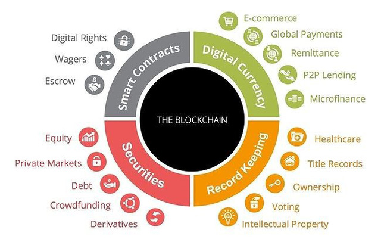

NHỮNG ỨNG DỤNG QUAN TRỌNG CỦA HTML5
MỤC LỤC
An ninh
Chuỗi cung ứng và Logictis
Giáo dục
Y tế
Bất động sản
Bảo hiểm
Từ thiện
Dịch vụ tài chính
Giải trí
Thương mai điện tử
IOT - Internet of thing

1. An ninh
Blockchain Bảo mật dữ liệu tuyệt đối.
Nhờ vào công nghệ chuỗi khối blockchain, mỗi giao dịch là một “block”, mỗi block đều có vai trò
như nhau, Dữ liệu không tập trung vào một máy chủ nào cả, không thể xóa bỏ hoặc rất khó thay
đổi.
Với việc lưu trữ thông tin truyền thống, chỉ cẩn đánh vào 1 máy chủ thì toàn bộ hệ thống sẽ bị
tê liệt.
Để có thể đánh sập mạng lưới blockchain, tin tặc cần đánh sập tất cả các "block" trên hệ thống
cùng một lúc. Và điều này là không thể.

Xem thêm: 12 Vụ tân công chấn động lịch sử công nghệ thế giới
2. Chuỗi cung ứng và logictics
IBM Blockchain: Biết rõ tình trạng và điều kiện mỗi sản phẩm trong chuỗi cung ứng, từ vật liệu thô tới phân phối, là điều rất quan trọng. Ứng dụng blockchain trong chuỗi cung ứng cho phép minh bạch hóa bằng một hồ sơ chia sẻ quyền sở hữu và vị trí của các phần, các sản phẩm trong thời gian thực.
Công nghiệp thực phẩm: Mạng lưới phức tạp của ngành công nghiệp thực phẩm, từ nông
dân tới các nhà bán lẻ, khiến cho việc theo dõi các căn bệnh do thực phẩm gây ra khá khó khăn.
Blockchain có thể cải thiện tính minh bạch và hiệu quả trong việc tìm ra những
loại thực phẩm có thể bị ô nhiễm và ở đâu trong suốt chuỗi cung ứng.

Ví dụ:
Nếu một doanh nghiệp sản xuất sữa áp dụng Blockchain vào quản lý chất lượng sản phẩm thì nhà
quản lý người tiêu dùng có thể truy xuất được các thông tin rất minh bạch.
Đối với nhà sản xuất:
Họ có thể thống kê và lưu trữ toàn bộ những hộp sữa đó trên thị trường để biết được những hộp
sữa đó đã tiêu thụ chưa, tiêu thụ được bao nhiêu, bao nhiêu hộp còn hạn sử dụng và bao nhiêu
hộp đã hết hạn sử dụng.
Đối với người tiêu dùng:
Có thể kiểm tra thông tin hộp sữa đó có phải hàng chính hãng hay không sẽ ngăn chặn toàn bộ
những sản phẩm nhái, hàng giả trên thị trường.
Về đầu trang
3. Giáo dục

Việc thẩm định bằng cấp, chứng chỉ là một vấn đề phức tạp và chưa bao giờ hết mới đối với nhiều nước trên thế giới. Khi tìm kiếm trên google, chúng ta có thể dễ dàng nhận thấy việc mua bán bằng cấp, chứng chỉ giả ở nhiều website trên thế giới
Việc quản lý các chứng chỉ, bằng cấp của các trường đại học nói chung hay các cơ sở đào tạo nghề nói riêng nếu được áp dụng công nghệ Blockchain sẽ góp phần minh bạch hóa hồ sơ học viên cũng như giúp các nhà tuyển dụng dễ dàng truy xuất nguồn gốc cơ sở đào tạo hay quá trình học tập của các ứng viên từ thấp đến cao.
Tại San Francisco, trường Holberton - một trường đào tạo kỹ sư phần mềm đã thông báo dự án quản lý sinh viên dựa trên nền tảng blockchain vào năm học mới. Sylvain Kalache, đồng sáng lập trường Holberton, chia sẻ với CNBC: "Đối với nhà tuyển dụng, họ tránh phải mất thời gian để kiểm tra chứng nhận của ứng viên bằng cách gọi các trường đại học hoặc trả một bên thứ ba để thực hiện công việc thẩm định này. Đồng thời việc sử dụng công nghệ blockchain cũng sẽ giúp nhà trường tiết kiệm chi phí trong việc xây dựng và vận hành cơ sở dữ liệu riêng của mình". Về đầu trang
4. Y tế

Khi người bệnh đi khám hay xét nghiệm, mọi kết quả của họ sẽ được lưu trữ sử dụng công nghệ blockchain sẽ giúp người bệnh bảo mật toàn bộ thông tin và chỉ số xét nghiệm của mình. Trong trường hợp người bệnh có nhu cầu chuyển sang bệnh viện khác ở bất kỳ đâu trên thế giới, họ chỉ cần truy xuất thông tin và kết quả chỉ số xét nghiệm của mình trên chuỗi blockchain mà cho dù hai bệnh viện (nơi khám ban đầu và nơi chữa bệnh mới) không cùng ngôn ngữ hay sử dụng phần mềm khác nhau.
Việc này giúp người bệnh giảm thiểu chi phí xét nghiệm lại khi đến các bệnh viện mới cũng như góp phần giúp nơi tiếp nhận bệnh nhân mới có thể truy xuất tiền sử bệnh tật, phác đồ điều trị hay các phản ứng phụ đối với các loại thành tố thuốc trước đây của bệnh nhân. Để từ đó giúp chuẩn đoán và đưa ra liệu trình điều trị phù hợp, mang lại hiệu quả cao cho người bệnh.
MedicalChain: Công ty trong lĩnh vực chăm sóc sức khỏe đầu tiên sử dụng công nghệ blockchain để tạo thuận lợi trong việc lưu trữ và sử dụng hồ sơ y tế điện tử để cung cấp trải nghiệm y học từ xa (telemedicine) hoàn chỉnh. Họ là các bác sĩ thực tế trong hệ thống chăm sóc sức khỏe của Anh và muốn thay đổi hệ thống này từ bên trong.
Nano Vision: Tìm kiếm động lực đổi mới y tế thoát khỏi cách lưu
trữ dữ liệu truyền thống và các hệ thống hồ sơ không tương thích, Nano
Vision kết hợp sức mạnh của blockchain và trí tuệ nhân tạo để thu thập
dữ liệu trên Nano Tokens. Trí tuệ nhân tạo sau đó sẽ tìm xu hướng và
phân tích sự kết nối dẫn đến những đột phá trong y học.

Về đầu trang
5. Bất động sản
 BitProperty: Sử dụng blockchain và hợp đồng thông minh,
BitProperty cho phép bất cứ ai ở bất cứ nơi nào trên thế giới (trừ Mỹ
và Nhật Bản, do các vấn đề về pháp lý) đều có thể đầu tư vào bát động
sản.
BitProperty: Sử dụng blockchain và hợp đồng thông minh,
BitProperty cho phép bất cứ ai ở bất cứ nơi nào trên thế giới (trừ Mỹ
và Nhật Bản, do các vấn đề về pháp lý) đều có thể đầu tư vào bát động
sản.
Deedcoin: Thay vì một khoản hoa hồng 6% trong ngành bất động sản, với Deedcoin, mức phí chỉ là 1% và kỳ vọng vào cách mới cho người mua và bán nhà kết nối với các đại lý bất động sản chấp nhận mức hoa hồng thấp hơn.
Ubiquity: Nền tảng blockchain phần mềm như dịch
vụ (Saas) này cung cấp trải nghiệm người dùng đơn giản
hơn để ghi lại thông tin bất động sản sản một cách an
toàn nhằm đảm bảo hồ sơ rõ ràng về quyền sở hữu.
Về đầu trang
6. Bảo hiểm
Accenture: Với mục tiêu thúc đẩy tính hiệu quả và hiệu suất trong ngành công nghiệp bảo hiểm, Accenture xây dựng các giải pháp về blockchain cho các khách hàng bảo hiểm. Họ chuyển các quy trình chính trong ngành bảo hiểm sang các thủ tục có ứng dụng blockchain nhằm gia tăng độ tin cậy hơn cho hệ thống.
Proof of insurance: Công ty bảo hiểm này đang thử nghiệm một giải pháp blockchain để cung cấp thông tin chứng minh về bảo hiểm được gọi là RiskBlock. Cuối cùng, khi công cụ này được triển khai đầy đủ, nó sẽ giúp các cơ quan thực thi pháp luật, người mua bảo hiểm và công ty bảo hiểm xác minh mức độ bảo hiểm trong thời gian thực và tăng tốc quá trình xử lý yêu cầu. Về đầu trang
7. Từ thiện

BitGive: Nền tảng gây quỹ toàn cầu này ứng dụng Bitcoin và công nghệ blockchain để đem lại sự minh bạch hơn cho các nhà tài trợ bằng cách chia sẻ thông tin tài chính và dự án theo thời gian thực. Save the Children, The Water Project và Medic Mobile là một trong số những tổ chức từ thiện làm việc với BitGive.
AidCoin: Một nghiên cứu cho thấy có 43% số người khảo sát không tin tưởng vào hoạt động từ thiện. AidCoin kỳ vọng sẽ cải thiện được niềm tin đó bằng hợp đồng thông minh và tiền mã hóa, và làm cho ngành phi lợi nhuận này trở nên minh bạch hơn.
Utopi: Sự thiếu minh
bạch đã làm cản trở việc làm từ
thiện, nhưng Utopi hy vọng sẽ
cải thiện tính minh bạch trong
các tổ chức phi lợi nhuận. Khi
các nhà tài trợ sử dụng nền
tảng của Utopi, họ có thể thấy
chính xác mỗi đồng xu họ bỏ ra
được chi tiêu như thế nào.
Về đầu trang
8. Dịch vụ tài chính
Tại Châu Á, OCBC Bank là ngân hàng đầu tiên trên thế giới sử dụng công nghệ blockchain (khối chuỗi) trong dịch vụ chuyển tiền nội địa và quốc tế, làm tăng hiệu suất, sự minh bạch, giảm chi phí và cải thiện trải nghiệm cho khách hàng.
Blockchain được xem như là một cách để cắt giảm chi phí và thời gian thanh toán bù trừ giao dịch liên ngân hàng, cũng như tạo ra hệ thống an toàn hơn. Tại thời điểm này, nhiều tổ chức tài chính đang có cuộc chiến tranh giành nhau nhằm hình thành các liên minh mới để thương mại hóa công nghệ blockchain. Đáng kể nhất chính là liên minh R3 của 3 ngân hàng lớn nhất của nước Úc bao gồm Westpac, Commonwealth, NAB cùng với 40 ngân hàng và hàng loạt tổ chức tài chính khác trên toàn thế giới.
Ripple: Ripple nhắm đến việc trở thành một nhà cung cấp giải pháp thanh toán toàn cầ bằng cách kết nối ngân hàng, nhà cung cấp dịch vụ thanh toán, doanh nghiệp và các giao dịch tài sản kỹ thuật số, cho phép giải quyết ngay tức thì, theo nhu cầu trên toàn cầu.
Bitcoin
Atom:
Một nhánh mới
của Bitcoin cho
phép trao đổi
tiền mã hóa dễ
dàng mà không
tốn phí giao
dịch và không
bị tấn công
giao dịch,
khiến Bitcoin
thực sự được
phân cấp lại.
Công nghệ này
dựa trên các
hoán đổi nguyên
tử (atomic
swaps) - được
xem là một công
cụ vô giá để
trao đổi các
đồng tiền mã
hóa và không
cần phải có một
bên thứ ba đáng
tin cậy. Nhưng
hiện tại, việc
áp dụng rộng
rãi các giao
dịch hoán đổi
nguyên tử đã bị
ngăn chặn vì
chúng đòi hỏi
phải có kỹ năng
kỹ thuật cao;
Bitcoin Atom có
thể giải quyết
vấn đề này một
phần nào đó.
Về đầu
trang
9. Giải trí
 Spotify:
Khi Spotify mua
công ty khởi
nghiệp về
blockchain
Mediachain
Labs, hãng công
nghệ này đã
giúp phát triển
các giải pháp
thông qua cơ sở
dữ liệu phi tập
trung nhằm kết
nối tốt hơn với
các nghệ sĩ và
các thỏa thuận
cấp phép với
các ca khúc
phát hành trên
dịch vụ của
Spotify.
Spotify:
Khi Spotify mua
công ty khởi
nghiệp về
blockchain
Mediachain
Labs, hãng công
nghệ này đã
giúp phát triển
các giải pháp
thông qua cơ sở
dữ liệu phi tập
trung nhằm kết
nối tốt hơn với
các nghệ sĩ và
các thỏa thuận
cấp phép với
các ca khúc
phát hành trên
dịch vụ của
Spotify.
Guts:
Đây là
một hệ
sinh
thái
bán vé
minh
bạch,
sử dụng
công
nghệ
blockchain
để loại
bỏ vé
gia n
lận và
thị
trường
vé mua
đi bán
lại.
Về
đầu
trang
10. Thương mại điện tử

Theo các chuyên gia, thị trường bán lẻ hiện nay nên dần dần chuyển dịch vụ của mình sang bán hàng trực tuyến, tận dụng lợi thế thương hiệu với chiến lược đa kênh để đạt được thành công và bảo vệ vị trí hiện tại. Nhìn chung, sự tin tưởng của người tiêu dùng và chi phí cao cho mô hình phân phối là những thách thức lớn cần được các doanh nghiệp giải quyết để thương mại điện tử tiến xa hơn nữa.
11. Internet of thing - IOT

Trong tương lai, tất cả các thiết bị sẽ được kết nối internet và hoàn toàn tự động hóa. Việc này chỉ có thế xảy ra khi việc kết nối được an toàn. Giả sử một máy chủ bị đánh sập thì toàn bộ các thiết bị trung một khu vực sẽ bị ảnh hưởng. Vì vậy blockchain là một giải pháp thiết thực cho vấn đề này.
Về đầu trang